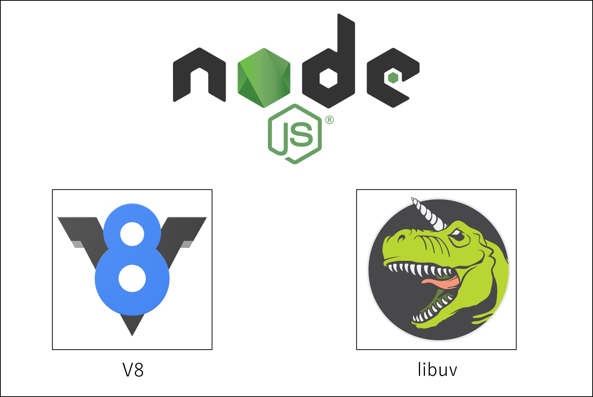
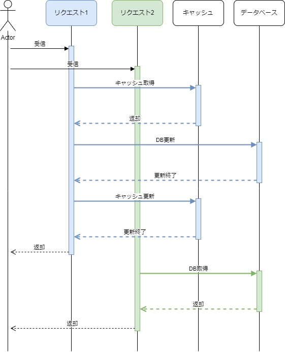
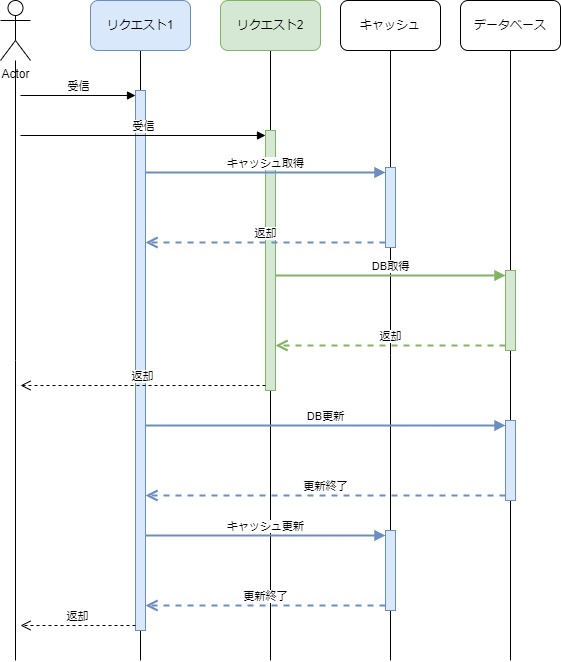

Node.js
はじめに
このページは、JavaScriptの進化の続きのページです。
ここではNode.jsにスポットを当てて記載していきます。
一応このページから読み進めても問題ないように構成したつもりですが、先のページを見てからの方が、Node.jsが生まれるまでの背景がわかって面白いかもしれません。
Node.jsとは
Node.jsはJavaScriptの実行環境（ランタイム）です。サーバーサイドでJavaScriptを使う事が出来るようになります。
HTTPをやり取りするサーバーとしてユーザーからのリクエストをやり取りするなど、ネットワークの処理を得意としています。
「V8」と「libuv」の2つがNode.jsの中核を成しています。

V8は、Chromeに内蔵されているJavaScriptエンジンです。JavaScriptのソースコードを受け取って機械語に翻訳し、OS上で実行してくれます。
libuvは、OSによるディスクへの書き込みや通信などの処理に関するイベントを監視し、そのステータスをNode.jsに通知する機能を持ちます。後で紹介する非同期処理とイベントループの中核を成すライブラリです。
特徴
Node.jsには大きく以下3つの特徴があります。
- 非同期のイベント駆動型ランタイム
- Non-Blocking I/O
- シングルスレッド
非同期のイベント駆動型ランタイム
Node.jsは「ファイルの読み込みを開始した」など、OS側のイベントを監視し、Node.js側で受け取ることが可能になっており、このようなイベントをトリガーとして処理を開始することができるようになっています。
これは先の『Node.jsとは』の章で記載した libuv というライブラリを使って実現しています。
実装レベルの話としては、EventEmitter（及びそれを継承したStream）という仕組みを利用します。EventEmitterの基本的な使い方は以下の通り。
on(eventName, listener)関数：イベントのlistenerを登録（第二引数のlistenerにコールバック関数を実装）emit(eventName, [args])関数：イベント発動。第二引数以降のargsを引数としてlistenerに渡す。
on()関数でイベントを登録し、emit()関数で登録されていた処理が実行されます。on()を使って登録されたlistenerは、そのイベントが発火される度に実行されます。
eventemitter.jsconst EventEmitter = require('events');
const eventEmitter = new EventEmitter(); // EventEmitterインスタンスを生成
// イベントが発動された時の処理を記述する
eventEmitter.on('myEvent', (arg1, arg2) => {
console.log('Emitted Event:' + 'arg1:' + arg1 + ', arg2:' + arg2);
});
// イベントを発動させる
eventEmitter.emit('myEvent');
eventEmitter.emit('myEvent', 'hoge');
eventEmitter.emit('myEvent', 'huge', 'hoga');
実行結果Emitted Event:arg1:undefined, arg2:undefined
Emitted Event:arg1:hoge, arg2:undefined
Emitted Event:arg1:huge, arg2:hoga
このように、発行されるイベントを起点にさまざまな処理を行う特徴を「イベント駆動型」と表現します。そしてその実行環境であるNode.jsは「非同期のイベント駆動型ランタイム」と呼ばれています。
次はNon-Blocking I/Oとシングルスレッドですが、これらの特徴について説明するためには、まずC10K問題（シーテンケー問題）について理解しておく必要があります。
C10K問題
C10K問題とは、「クライアント1万台問題」の略で、ApacheなどのWebサーバーソフトウェアとクライアントとの通信において、クライアントの同時接続数が約1万台に達すると、Webサーバーのハードウェア性能に余裕があるにもかかわらず、レスポンス性能が大きく下がる問題です。
これには以下3つの原因があります。
1. プロセス数の上限
Apacheなどのソフトウェアは、1つのリクエストに対して1つのプロセスを割り当てて処理をする方式が一般的でした。
OS内で走るプロセスにはプロセスIDが割り当てられています。例えば32bit Linuxでは32767が上限です（64bit Linuxでは100万以上まで引き上げられます）。上限を超えるプロセスは生成できないため、1リクエスト1プロセス方式ではプロセス数の上限以上のリクエストを同時に処理できません。ウェブサーバーではApacheの他にも様々なプロセスが走っているため、Apacheに割り当てられるプロセスもその分減ります。
2. コンテキストスイッチのコスト
コンテキストスイッチとは、1つのCPUが複数のプロセスを並行処理する（処理するプロセスを切り替える）ためにそれまでの処理の内容を記録し、新しい処理の内容を復元することです。「コンテキスト（文脈）」「スイッチ（切り替え）」という名前からもお分かりいただけると思います。複数のプロセスが同時に走っているように見せるため、OS内ではこのコンテキストスイッチが頻繁に繰り返されています。
1リクエスト1プロセス方式では、リクエストが増えるとプロセスも増えるため、コンテキストスイッチのコストが無視できなくなります。特にメモリー空間の切り替えには大きなコストがかかります。そしてコンテキストスイッチのコストが大きくなると、肝心なリクエストを捌くCPUリソースが足りなくなります。
マルチプロセスではなくシングルプロセス・マルチスレッドにすればプロセスIDの問題やコンテキストスイッチのコストはかなり改善されますが、それでも次に述べる問題があります。
3. ファイルディスクリプターの上限
例えばデータベースを扱うアプリケーションの場合、リクエストごとにDBサーバーに接続すると、その分だけファイルディスクリプターを消費します。また、MySQLのキャッシュにmemcachedを使う構成にしていると、消費するファイルディスクリプターの数が倍になります。
ファイルディスクリプターとは簡単に説明するとOSが読み書きしているファイルのIDのようなもので、プロセスIDと同様にこれも一度に使える上限がOSごと・プロセスごとに設定されています。
つまり、OSで決められている以上の同時接続はできないため、プロセスIDの他にもこのファイルディスクリプターも同時に捌けるリクエストを制限する要因になります。
C10K問題の解決方法
C10K問題を解決するには、サーバーの台数を増やすという解決方法がありますが、別の方法として考え出されたのが「Non-Blocking I/Oとシングルスレッド」という方式です。Node.jsはこの方式を採用しています。
余談ですが、WebサーバーソフトウェアのNginxもこの方式でC10K問題に対応しており、マルチプロセスのApacheよりも高速かつ大規模サービスに向いていると言われています。
話しをNode.jsに戻してシングルスレッドとNon-Blocking I/Oの話をしていきます。
Non-Blocking IO
以下の図はBlocking IOの場合の処理の流れです。入出力中は他の処理を行わず、終わるまでI/Oを待機します。
Blocking IO
リクエスト1のI/Oが終わってからリクエスト2の処理開始

Node.jsでは、I/Oが発生した場合にその完了を待たずに、すぐに次の処理を行うことになります。これがNon-Blocking IOです。
Non-Blocking IO
リクエスト1の完了を待たずにリクエスト2の処理を開始する

これをコードで体験すると以下のようになります。
以下のコードは、ファイルを読み込んで標準出力するコードですが、実行結果を見ると1→3→2の順に出力されています。
test.js'use strict';
import fs from 'fs';
console.log(1)
fs.readFile('nodejs_test.txt', (err, data) => {
console.log(2)
});
console.log(3)
実行結果1
3
2
fs.readFileはファイルを読み込むためのI/Oを発生させます。ブロッキングI/Oを採用している場合、I/Oが完了するまで次の処理を行わないため、1→2→3の順に出力されますが、
Non-Blocking-I/Oの場合はファイルの読み込みが終わるのを待たずに次の処理が始まります。このため、出力順が1→3→2になっています。これがNon-Blocking-I/Oです。
I/Oが完了してから処理を行いたい場合はCallback関数を使います。fs.readFileの第二引数に渡された関数がCallback関数で、ファイル読み込みがいつか終わったら実行されます。Callback関数を使わずに、以下のようにファイルの中身を取得してコンソールに出力しようとしてもうまく出力されません。undefinedになります。
test.js'use strict';
import fs from 'fs';
let input
console.log(1)
fs.readFile('nodejs_test.txt', (err, data) => {
input = data;
});
console.log(input);
実行結果1
undefined
ファイルの中身を取得してその中身を出力するためには、以下のようにCallback関数の中で処理する必要があります。
test.js'use strict';
import fs from 'fs';
let input
console.log(1)
fs.readFile('nodejs_test.txt', (err, data) => {
input = data;
console.log(input.toString());
});
実行結果1
nodejs_testファイルの中
シングルスレッドのイベントループモデル
Node.js はシングルスレッドのイベントループモデルを採用しており、1つのメインスレッドでイベントループを実行します。これは処理の直列化によって効率的にタスクを処理するためです。イベントループは、先の『Node.jsとは』の章で記載した libuv というライブラリを使って実現しています。
イベントループモデルについては以下の記事がわかりやすいと思ったのでリンクを張っておきます。
描いて理解するイベントループ
また、シングルスレッドとは言っても、非同期的な処理を実現するために、I/O 操作や非同期処理を別のスレッドで実行することはあります。しかしこれらのスレッドは裏側で動作する補助的なスレッドであり、メインスレッドはブロックされることなく処理を続けます。
これにより、多くのリクエストを効率的に処理できるようになっています。Apache のようなマルチプロセス/マルチスレッドのモデルとは異なり、Node.js はシングルスレッドであるため、スレッドの切り替えによるオーバーヘッドが発生せず、メモリ消費量を抑えることができます。
シングルスレッドで動かしたら、待ちが発生した場合を考慮すると高いパフォーマンスが得られないように感じますが、Non-Blocking IOという特徴を持つため、シングルスレッドでも性能を最大限発揮できるようになっています。
作った物
Node.js を使って実際にものを作ってみました。
具体的な中身の話はこちら
参考書籍
参考サイト
- Zenn シングルプロセスのNginxがマルチプロセスのApacheより高速という意味について考えてみた
- wikipedia C10K問題
- Qiita C10K問題とNode.js
- 1分で読めるIT用語辞典 C10K問題
- さくらのナレッジ いまさら聞けないNode.js
- IT求人ナビ Node.jsは何が凄いのか
- RECRUIT Tech Blog Node.jsの非同期I/Oについて調べてみた
- LaKeel Node.js の非同期処理の仕組み
- ファイル・ディスクリプターの使用
- Qiita Node.jsのEventEmitterについていろいろ
- WESEEK Tech Blog Node.js|EventEmitterの使い方解説
- Zenn EventEmitterとストリーム
- What is V8?
- The V8 JavaScript Engine
- TechMania Node.jsとは【入門編】できることやメリットを解説
- wikipedia V8 (JavaScriptエンジン)
- kkty's blog libuvとは(特にイベントループについて)
- Medium Node Js Internal Structure Part-1
- 日経XTECH I/Oのイベント管理がキモ
- Qiita Node.jsの設計をつらつらと概観する
- Linkedin What Is Libuv ?
- kinsta Node.jsとは
- Linkedin Ahmed EL_Shnnawyさんの投稿
- GK Front-end Blog package.jsonとは
- Qiita ESモジュールとCommonJSと対応したTypeScriptパッケージの（たぶん）正しい作り方
- Zenn CommonJSとES Modulesについてまとめる
- Qiita 描いて理解するイベントループ